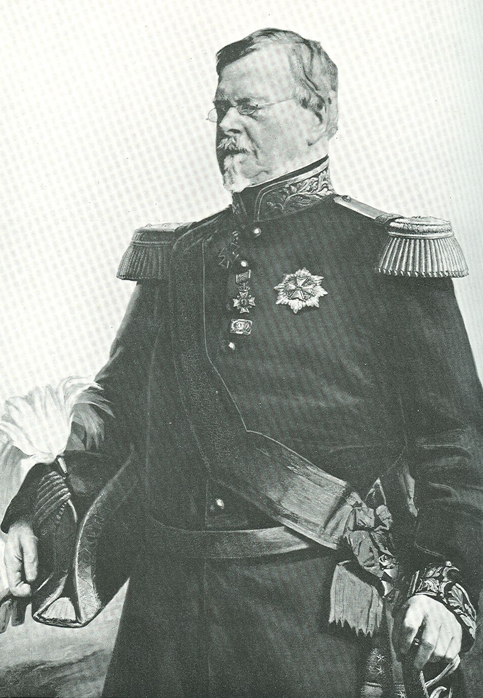

Anthology
of Louisiana Literature
Bernhard, Duke of Saxe-Weimar Eisenach.
Travels through North America During the Years 1825 and 1826.
TRAVELS
THROUGH
NORTH AMERICA,
DURING THE
YEARS 1825 AND 1826.
———— • ————
BY HIS HIGHNESS
BERNHARD, DUKE OF SAXE-WEIMAR EISENACH.
—————
IN TWO VOLUMES.
—————
VOL. I.
————————
PHILADELPHIA:
CAREY, LEA & CAREY — CHESNUT STREET.
SOLD IN NEW YORK BY G. & C. CARVILL.
————————
1828.
|
|

|
|
Prince Bernhard of Saxe-Weimar-Eisenach (1792-1862)
|
CHAPTER XIX.
Journey to New Orleans, and Residence in that City.
ON the 18th of January, we embarked in the schooner Emblem, whose cabin was proportioned to her tonnage, (which was but fifty tons,) but comfortably high, and well ornamented. The sides were of mahogany and maple; on each side were two staterooms, with two births each; the back part of the cabin, being something higher than the forward part, contained a birth on each side. Of these, the starboard was occupied by Mr. Bowdoin, the other by myself.
The shores of Mobile Bay, which is very wide, arc low and overgrown with wood, before us lay a long island, called Isle Dauphine, by the unfortunate Delasalle, who discovered it . Mobile point lies to the left, where, after sunset, we beheld the light in the light-house. There stood on this point in the late war a small fort, called Fort Bowyer, which the present Lieutenant Colonel, then Major Lawrence, gallantly defended, with a garrison of one hundred and thirty men, against eight hundred disembarked English sailors and Seminole Indians, under Major Nichols. The assailants were defeated, after their ordnance was dismounted, with considerable loss, and the English corvette Hermes, which covered the attack, was blown up by the welldirected fire of the fort. In February, 1815, this brave officer found himself obliged to yield to superior force, and to capitulate to Admiral Cockburn, who was on his return from the unsuccessful expedition to New Orleans. This was tbe last act of hostility that occurred during that war. Fort Bowyer is since demolished, and in its stead a more extensive fortress is erecting, which we would willingly have inspected, had the wind been more favourable, and brought us there earlier. We steered between Mobile Point and Dauphin Island, so as to reach the Mexican gulf, and turning then to the right, southward of the Sandy Islands, which laid along the coast, sailed towards Lake Borgne. Scarcely were we at sea, when a strong wind rose from the west, which blew directly against us. We struggled nearly the whole night to beat to windward, but in vain. The wind changed to a gale, with rain, thunder, and lightning. The main-topmast was carried away, and fell on deck. The mate was injured by the helm striking him in the side, and was for a time unfit for duty. On account of the great bustle on deck, the passengers could hardly close an eye all night. The motion of the vessel was violent, on account of her small size. A falling block broke out several of the panes in the sky-light of the cabin, so that the rain was admitted, and the furniture was tossed about by the rolling.
On the morning of the 19th of January, we were driven back to the strait between Dauphin Island and Mobile Point, and the anchor was dropt to prevent farther drifting. I was sea-sick, but had the consolation that several passengers shared my misfortune. The whole day continued disagreeable, cold, and cloudy. As we lay not far from Dauphin Island, several of our company went on shore, and brought back a few thrushes which they had shot I was too unwell to feel any desire of visiting this inhospitable island, a mere strip of sand, bearing nothing but everlasting pines. Upon it, stands some remains of an old entrenchment and barrack. Besides the custom-house officers, only three families live on the whole island. We saw the light-house, and the houses at Mobile Point, not far from us. I wished to have gone there to see the fortification lately commenced, but it was too far to go on a rough sea in a skiff.
On the 20th of January, the wind was more favourable; it blew from the north-east, and dispersed the clouds, and we set sail. After several delays, caused by striking on sand-banks, we proceeded with a favourable wind, passed Dauphin Island and the islands Petit Bois, Massacre, Horn, and Ship Island.
These islands consist of high sand-hills, some of them covered with pine, and remind one strongly of the coasts of Holland and Flanders. Behind Horn and Massacre Islands lies a bay, which is called Pascagoula, from a river rising in the state of Mississippi, and emptying here into the sea. Ship Island is about nine miles long, and it was here that the English fleet which transported the troops sent on the expedition against New Orleans, remained during the months of December and January, 1814-15. At a considerable distance from us to the left, were some scattered islands, called Les Malheureux. Behind these were the islands De la Chandeleur, and still farther La Clef du Francmagon. Afterwards we passed a muddy shallow, upon which, luckily, we did not stick fast, and arrived in the gulf Lac Borgne, which connects itself with Lake Ponchartrain, lying back of it, by hvo communications, each ahovea mile broad; of which one is called Chef Menteur, and the other the Rigolets. Both are guarded by forts, the first by the fort of Chef Menteur, the other by that of the Petites Coquilles, so called because it is built on a foundation of muscle shells, and its walls are composed of a cement of the same. We took this last direction, and passed the Rigolets in the night, with a fair wind. Night had already fallen when we reached Lake Borgne. After we had passed the Rigolets, we arrived in Lake Ponchartrain, then turned left from the light-house of Fort St John, which protects the entrance of the bayou of the same name, leading to New Orleans.
I awoke on the 21st of January, as we entered the bayou St . John. This water is so broad, that we could not see the northern shore. We remained at the entrance one hour, to give the sailors a short rest, who had worked the whole night, and whose duty it was now to tow the vessel to the city, six miles distant. This fort, which has lost its importance since the erection of Chef Menteur, and Petites Coquilles, is abandoned, and a tavern is now building in its place. It lies about five hundred paces distant from the sea, but on account of the marshy banks cannot be thence attacked without great difficulty. The bank is covered with thick beams, to make it hold firm, which covering in this hot and damp climate perishes very quickly. The causeway which runs along the bayou, is of made earth on a foundation of timber. Behind the fort is a public house, called Ponchartrain Hotel, which is much frequented by persons from the city during summer. I recognized the darling amusements of the inhabitants, in a pharo and roulette table.
As the passage hence to the city is very tedious in stages, we proposed to hire a carriage, but there was none to be found; six dollars was asked for a boat; we therefore, decided to go on foot. The Colonel, Mr. Huygens, Mr. Egbert, Mr. Chew, and myself made up this walking party. The morning was beautiful spring weather; we passed through a shocking marshy country, along the right side of the bayou. The woods were hanging full of the hateful Spanish moss, and a number of palmettoes were the only variety afforded. The causeway was very muddy; there were good wooden bridges over little ditches, which conveyed the water from the surrounding marshes into the bayou.
After we had proceeded three miles in this manner, we came into a cultivated district, passed a sort of gate, and found ourselves quite in another world. Plantations, with handsome buildings, followed in quick succession; noble live oaks, which had been trimmed to regular shapes, young orange trees, pride of China, and other tropical trees and bushes, along the road. Several inns and public gardens were exhibited, for a population that willingly seeks amusement. We noticed several mansionhouses, ornamented with columns, piazzas, and covered galleries; some of these were of ancient style in building. It was naturally agreeable to me, after wandering a long time in mere wildernesses, once more to come into a long civilized country. We saw from afar, the white spires of the cathedral of New Orleans,- also the masts of the ships lying in the Mississippi. The bayou unites itself, three miles from this city, with a canal leading thither, which we passed upon a turning bridge, to strike into the city by a nearer way.
This road carried us between well-built mansions, and over the streets wore hung reflecting lamps., The first view of the city, as we reached, without knowing it, was really not handsome; for we came into the oldest section, which consisted only of little one-story houses, with mud walls, and wide projecting roofs. On the whole, the streets are regularly laid out, part parallel with the river, the rest perpendicular to it. The ancient town was surrounded by a wall, which is destroyed, in its room there is a boulevard laid out, called Rue de Remparts. Next to the old town below, lies the suburb Marigny, and above, that of St. Mary; then begins the most elegant part of the city.
Before we searched for lodgings, we looked about a little through the city, and went first to the Mississippi, to pay our homage to this "father of rivers." It is about half a mile wide, and must be above eighty fathoms deep; it is separated from the city by a compost of muscle shells. This causeway defends it from inundations. There are no wharves, they cannot be fixed, as the river would sweep them away. The ships lay four and five deep, in tiers along the bank, as in the Thames, at London. Below them, were-ten very large steam-boats, employed in the river trade. In a line with the bank stood houses, which were two or three stories high, and built of brick, also ancient massive Spanish houses, known by their heavy, solid style, and mostly white. We passed by a square, of which the river formed one
[graphic]
[ocr errors]
side, opposite stood the cathedral, and on each side of it, a massive public edifice, with arcades. Along the bank stood the market-houses, built of brick, modelled after the Propylaea, in Athens, and divided into separate blocks. We saw in these, fine pine-apples, oranges, bananas, peccan-nuts, cocoa-nuts, and vegetables of different descriptions; also several shops, in which coffee and oysters were sold. The black population appeared very large; we were informed, that above one-half of the inhabitants, forty-five thousand in number, were of the darker colour. The custom-house on the Lcv6e, is a pretty building.
We met a merchant, Mr. Ogden, partner of Mr. William Nott, to whose house I had letters, who had the politeness to take charge of us, and assist us in our search for lodgings. We obtained tolerable quarters in the boarding house of Madame Herries, Rue de Chartres. The first person I encountered in this house, was Count Vidua, with whom I had become acquainted in New York, and who since had travelled through Canada, the western country, and down the Ohio and Mississippi.
My first excursion was to visit Mr. Grymes, who here inhabits a large, massive, and splendidly furnished house. I found only Mrs. Grymes at home, who after an exceedingly fatiguing journey arrived here, and in fourteen days after had given birth to a fine son. I found two elegantly arranged rooms prepared for me, but I did not accept this hospitable invitation. After some time Mr. Grymes came home, and accompanied me back to my lodgings. As our schooner had not yet arrived, we went to meet it and found it in the canal, a mile and a half from town, where two cotton boats blocked up the way. We had our bagj$age put into the skiff, and came with it into the basin, where the canal terminates.
In the evening we paid our visit to the governor of the state of Louisiana, Mr. Johnson, but did not find him at home. After this we went to several coffee-houses, where the lower class amused themselves, hearing a workman singing in Spanish, which he accompanied with the guitar. Mr. Grymes took me to the masked ball, which is held every evening during the carnival at the French theatre. The saloon in which they danced, was quite long, well planned, and adorned with large mirrors. Hound it were three rows of benches amphitheatrically arranged- There were few masks, only a few dominos, none in character. Cotillions and waltzes were the dances performed. The dress of the ladies I observed to be very elegant, but understood that most of those dancing did not belong to the better class of ^xiiety. There were several adjoining rooms open, in which there is a supper when subscription balls are given. In the ground floor of the building arc rooms, in which pharo and roulette are played. These places were obscure, and resembled caverns: the company playing there appeared from their dress, not to be of the best description.
Next day, we made new acquaintances, and renewed some old ones. I remained in this city several weeks, for I was obliged to give up my plan of.visiting Mexico, as no stranger was allowed to go to that country who was not a subject of such states as had recognized the new government . There were too many obstacles in my way, and therefore I determined to wait in New Orleans for the mild season, and then to ascend the Mississippi. The result was an extensive acquaintance, a succession of visits, a certain conformity in living, from which one cannot refrain yielding to in a city. No day passed over this winter which did not produce something pleasant or interesting, each day however, was nearly the same as its predecessors. Dinners, evening parties, plays, masquerades, and other amusements followed close on each other, and were interrupted only by the little circumstances which accompany life in this hemisphere, as well as in (he other.
The cathedral in New Orleans is built in a dull and heavy style of architecture externally, with a gable on which a tower and two lateral cupolas are erected. The fagade is so confused, that I cannot pretend to describe it. Within, the church resembles a village church in Flanders. The ceiling is of wood, the pillars which support it, and divide the nave into three aisles, are heavy, made of wood, covered with plaster: as well as the walls, they are constructed without taste. The three altars are distinguished by no remarkable ornament. Upon one of the side altars stands an ugly wax image of the virgin and child. Near the great altar is a throne for the bishop. On Sundays and holy-days, this cathedral is visited by the beau monde; except on these occasions, I found that most of the worshippers consisted only of blacks, and coloured people, the chief part of them females.
The sinking of the earth of the Levee is guarded against in a peculiar way. In Holland piles are driven in along the water for this purpose, and held together by wattling. After the dam is raised up, there are palisades of the same kind placed behind each other. Here the twigs of the palmetto are inserted in the ground close together, and their fan-like leaves form a wall, which prevents the earth from rolling down.
There are only two streets paved in the city; but all have brick side-walks. The paving stones are brought as ballast by the ships from the northern states, and sell here very high. Several sidewalks are also laid with broad flag stones. In the carriage way of the streets there is a prodigious quantity of mud. After a rain it is difficult even for a carriage to pass; the walkers who wish to go from one side to the other, have a severe inconvenience before them; either they must make a long digression, to find some stones that are placed in the abyss, for the benefit of jumping over, or if they undertake to wade through, run a risk of sticking fast .
Sunday is not observed with the puritanic strictness in New Orleans, that it is in the north. The shops are open, and there is singing and guitar-playing in the streets. In New York, or Philadelphia, such proceedings would be regarded as outrageously indecent . On a Sunday we went for the first time, to the French theatre, in which a play was performed every Sunday and Thursday. The piece for this night, was the tragedy of Regulus, and two vaudevilles. The dramatic corps was merely tolerable, such as those of the small French provincial towns,* where they never presume to present tragedies, or comedies of the highest class. "Regulus" was murdered; Mr. Marchand and Madame CJozel, whose husband performed the comic parts very well in the vaudevilles, alone distinguished themselves. The saloon is not very large, but well ornamented; below is the pit and parquet, a row of boxes each for four persons, and before them a balcony. The boxes are not divided by walls, but only separated ky a low partition, so that the ladies can exhibit themselves conveniently. Over the first row of boxes is a second, to which the free colored people resort, who are not admitted to any other part of the theatre, and above this row is the gallery, in which slaves may go, with the permission of their masters. Behind the boxes is a lobby, where the gentlemen who do not wish to sit in a box, stand, or walk about, where they can see over the boxes. The theatre was less attended, than we had supposed it would be; and it was said, that the great shock felt in the commercial world, on account of the bankruptcy of three of the most distinguished houses, in consequence of unfortunate speculations in cotton, and the failures in Liverpool, was the cause of this desertion.
The garrison consists of two companies of infantry, of the first and fourth regiments. This has been here since the last insurrection of the negroes, and has been continued, to overawe them. In case of a serious alarm, this would prove but of little service! and what security is there against such an alarm? In Chartres street, where we dwelt, there were two establishments, which constantly revolted my feelings, to wit: shops in which negroes were purchased and sold. These unfortunate beings, of
* [This is the same corps which the Philadclphians extol so highly, that one night almost suppose them equal to the artists of the Theatre Frcmgait, if, unfortunately, one visit to the theatre, did not completely dispel the illusion!]? Tiut.
Vol. II. 8
both sexes, stood or sat the whole day, in these shops, or in front of them, to exhibit themselves, and wait for purchasers. The abomination is shocking, and the barbarity and indifference, produced by the custom in white men, is indescribable.*
There were subscription balls given in New Orleans, to which the managers had the politeness to invite us. These balls took place twice a week, Tuesdays and Fridays, at the French theatre, where the masquerade had been, which I mentioned before. None but good society were admitted to these subscription balls: the first that we attended was not crowded, however, the generality of the ladies present were very pretty, and had a very genteel French air. The dress was extremely elegant, and after the latest Paris fashion. The ladies danced, upon the whole, excellently, and did great honour to their French teachers. Dancing, and some instruction in music, is almost the whole education of the female creoles.
Most of the gentlemen here are far behind the ladies in elegance. They did not remain long at the ball, but hasted away to the quadroon ball, so called, where they amused themselves more, and were more at their ease. This was the reason why there were more ladies than gentlemen present at the ball, and that many were obliged to form "tapestry." When a lady is left sitting, she is said to be "bredouille." Two cotillions and a waltz, are danced in succession, and there is hardly an interval of two or three minutes between the dances. The music was performed by negroes and coloured people, and was pretty good. The governor was also at the ball, and introduced me to several gentlemen, among others, a Frenchman, General Garrigues de Flaugeac, who, having emigrated here from St . Domingo, had married, and given the world some very handsome daughters. Several of the French familes here settled, and indeed, the most respectable, were emigrants from that island, who wait for the indera
? Among the slave traders, a Hollander from Amsterdam, disgusted me particularly, his name was Jacobs. He had the most vulgar and sinister countenance imaginable, was constantly drunk, and treated the wretched negroes in the most brutal manner; he was, however, severely beaten by these miserable beings, driven to despair.f
? The virtuou indignation of the Duke, at three horrihle ennarqaenets of slavery, ls slieh as eTfry B1SBnot hardened hy long familiarity with such scenra, most feel f thnee to whom they are dally presented repart them with calm indifference, or even attempt to argue in rarour of their continuance nod harmleamrM. lt-* not as generally known, as it should he. that the slare trade is carried on, almost as vigorously no*, M r*rr was, and hy oitixensof almost eyery nation! not in the least excepting Americans. The slnTC vessels sallpnn eipally from Hnvaniia and St. Thomas, ana land their cargoes on the island of Puerto Hleo, and elscwnmwhither purchasers and agents resort, when such an arriral ocenrs. Two sctfbonere, with large rsrc"-'- nrrived ln Purrto Uico in Fehruary last, and two hrigs were daily oxnecied. It la said in the West Initio*, Imi all ships of war, of powers owning West India Colonics, ronnirr at the undo, which is fully supported hy*S£'as French, Danish, and English cruisers were In the vicinity, when the ahove mentioned cargoes arrived, Tub Idea of cruising off the coast or Africa, to prevent the trade, Is ridiculed hy the slave dealers, with one nf wfosi the writer of this note conversed. lf the American, or any other government rvatlv n-isard to put an ens to tan trade, tt could he very effectually accomplished, hy sending small arm, ,1 vessels to intercept the slave tr-"V: ?ear their places of landing cargoes, which are not very numerous. It is also «nfa% iu the West ludiei. tost I"Havanna traders still contrive to introduce Africans into the southorn part of the United States; of I*" ""j or f.t.ehood of this, we know nothing. The slave vessels are generally r "" "t sailors. Two of them sailed on this exi
completely armed and very fast sailers. Two of them sailed ou thia execrahle trade ii port visited hy the writer.?TreM.
nification due to them, but without any great hopes of receiving it .
Colonel Wool inspected the two companies of the first and fourth regiments, under Major Twiggs stationed here; both together made at the most, eighty men under arms. The inspection took place before the Cathedral. I admired the good order and great propriety of these companies, as well as their uniformity of march and dressing, which I had no opportunity to observe before, in the troops of the United States. There was indeed many things to be wished for; as for example, the coats of the men did not fit, and many were too short; the grey cloth pantaloons were of different shades, and much too short; no bayonet sheaths, nor gun straps; the belt intended for the bayonet sheath over that of the cartridge box: the privates had wooden flints in their guns, and none in their cartridge boxes, also no spare flints, files, screwdrivers, nor oil flasks. From the false maxim, that the second rank, if they are shorter men, cannot fire over the front, the lesser men are ranged in the first, and the taller in the second rank through the whole army of the United States, and this produces a great eye-sore. There was some manual exercise, and manojuvres in battalion training: all good. The soldiers were mostly young, handsome and strong men, well fed and healthy looking natives of the western states; there were some Germans and Irish among them. The Irish, however, since their conduct is often in nowise commendable, are no longer admitted. Governor Johnson remained during the review, which lasted above an hour or more; there were also several members of the legislature now assembling, present. I formed an acquaintance here with General La Coste, who formerly had been engaged in the Spanish service, and at present commanded a division of the Louisiana militia. Colonel Croghan also attended the review.*
When the review was over, the governor showed me the two extensive buildings, joining the Cathedral, with arcades, as beforementioned. One of them is devoted to the use of the several courts of justice, and the other is the City Hall. In the first, the United States court was holding its sessions, and as it was rather cold, the judge had removed himself to the fire-place, there to have the business transacted before him. The suit in controversy related to the sale of a negro. The buyer had purchased him
* Colonel Choghah was one of the most distinguished officers of the American army. In the last war, he defended a miserable stockade, (Fort Stephenson) on Lake Eric, against a force eight times greater than his own, which had artillery, and drove it back. After the peace, he was appointed Post Master of New Orleans, and during my stay in this city, he had entered again into the army, and held the post of second Inspector-General.
as a slave for life; after the bargain had been concluded, and payment made, he discovered, by the declaration of his former master, the seller, that at a certain period he was to be free. I could not remain long enough in the court, to wait for the decision.
We passed then to the City Hall. In the lower story, is the guard-house of the city guard, besides a prison* for runaways, or negroes punished by order of their masters, who are here incarcerated, and employed in all servile labours for the city; they are termed negres marrons. The masters receive a daily recompense of twenty-five cents for each imprisoned negro. Near the guard-house stands a small piece of ordnance, from which the signal tattoo is fired. After this shot, no negro can tread the streets without a pass.t The upper stories of this building contains the offices and court halls of the magistrates. Part of them were ornamented very richly, as these chambers served as quarters for General La Fayette, who was here in the month of April last. Before the chambers, the whole length of the building, ran a gallery with very large windows, which being raised in summer, change the gallery into an airy balcony: an arrangement which I had remarked to exist also in the other building, where the courts of justice sat.
Hence the governor next conducted me to the old Spanish government house, in which the senators and representatives of the state of Louisiana were now assembled. The building is ancient and crazy, otherwise situated in a handsome spot on the levee, surrounded by a balcony. There is nothing more done for the repair of this building, as in a few years the legislature will be removed to Donaldsonville. The reason given for this is, that many members of the legislature are plain people, who feel embarrassed in New Orleans, and hope to be more at their ease in Donaldsonville. The office of the governor is in the yard, in a
? [Commonly known in New Orleans by the name of the Calaboose, (from Calabozo, the Spanish term for a vaulted dungeon,) and a great terror to evildoers in that city; the efficiency of the police of which can never be enough admired.]?Thass.
f.1 have already made some remarks with regard to the apprehension of negroes in Charleston. If a person wishes here to have a house-negro, male or female, chastised, they are sent with a note, in which the number of lashes which the bearer is to receive are specified, with a quarter of a dollar; he or she a lodged in the slave prison. (Here the slave receives the punishment, and a certificate, which he must carry to his master. The maximum of lashes is thirtynine, according to the Mosaic law. The species of punishment is specified us in Charleston, or "aux quatrepiquets." In this last case, the poor wretch is pressed out flat on his face upon the earth, and his hands and feet bound to four posts. In this posture he receives his flogging. This frightful method of chastisement, is principally in use on the plantations; and cruel discipline is there chiefly practised. Whoever wishes to punish a house servant severely, either hires or sells him to work on the plantations.
small house, where the secretary of the Spanish governor formerly had his office.
In a magazine belonging to the state, there are still several articles which belonged to the former navy-yard, and which, hereafter, are to be sent to Pensacola. Among these, I remarked brass and iron cannon of various calibres, and from different countries, English, Spanish, and French. There were some ancient ones among the French, with beautiful ornaments and inscriptions. On one was, "ultima ratio regum;" on others, the darling "libertf, egalitt." These pieces were found in the trifling fortifications that formerly surrounded the city, when the United States took possession of Louisiana, in 1803.
During the last of January, it rained uncommonly hard and steady. The streets became bottomless: holes formed in them, where carriages and carts were in constant peril of upsetting. At first it was cold; while the rain continued, there followed such an oppressive heat, that it was feared an earthquake was about to take place: it thundered and lightened also very heavily.
At the masked balls, each paid a dollar for admission. As I visited it for the second time, I observed, however, many present by free tickets, and I was told that the company was very much mixed. The unmasked ladies belonging to good society, sat in the recesses of the windows, which were higher than the saloon, and furnished with galleries. There were some masks in character, but none worthy of remark. Two quarrels took place, which commenced in the ball-room with blows, and terminated in the vestibule, with pocket-pistols and kicking, without any interruption from the police.
On the same evening, what was called a quadroon ball took place. A quadroon is the child of a mestize mother and a white lather, as a mestize is the child of a mulatto mother and a white father. The quadroons are almost entirely white: from their skin no one would detect their origin; nay many of them have w fiair a complexion as many of the haughty Creole females. Such of them as frequent these balls are free. Formerly they were known by their black hair and eyes, but at present there are completely fair quadroon males artfl females. Still, however, the strongest prejudice reigna against them on account of their black blood, and the white ladies maintain, or affect to maintain, the most violent aversion towards them. Marriage between the white and coloured population is forbidden by the law of the state. As the quadroons on their part regard the negroes and mulattoes with contempt, and will not mix with them, so nothing remains for them but to be the friends, as it is termed, of the white men. The female quadroon looks upon such an enPgement as a matrimonial contract, though it goes no farther than a formal contract by which the "friend" engages to pay the father or mother of the quadroon a specified sum. The quadroons both assume the name of their friends, and as I am assured preserve this engagement with as much fidelity as ladies espoused at the altar. Several of these girls have inherited property from their fathers or friends, and possess handsome fortunes. Notwithstanding this, their situation is always very humiliating. They cannot drive through the streets in a carriage, and their "friends" are forced to bring them in their own conveyances after dark to the ball: they dare not sit in the presence of white ladies, and cannot enter their apartments without especial permission. The whites have the privilege to procure these unfortunate creatures a whipping like that inflicted on slaves, upon an accusation, proved by two witnesses. Several of these females have enjoyed the benefits of as careful an education as most of the whites; they conduct themselves ordinarily with more propriety and decorum, and confer more happiness on their "friends," than many of the white ladies to their married lords. Still, the white ladies constantly speak with the greatest contempt, and even with animosity, of these unhappy and oppressed beings. The strongest language of high nobility in the monarchies of the old world, cannot be more haughty, overweening or contemptuous towards their fellow creatures, than the expressions of the creole females with regard to the quadroons, in one of the much vaunted states of the free Union. In fact, such comparison strikes the mind of a thinking being very singularly! Many wealthy fathers, on account of the existing prejudices send daughters of this description to France, where these girls with a good education and property, find no difficulty in forming a legitimate establishment . At the quadroon ball, only coloured ladies are admitted, the men of that caste, be it understood, are shut out by the white gentlemen. To take away all semblance of vulgarity, the price of admission is fixed at two dollars, so that only persons of the better class can appear there.
As a stranger in my situation should see every thing, to acquire a knowledge of the habits, customs, opinions and prejudices of the people he is among, therefore I accepted the offer of some gentlemen who proposed to carry me to this quadroon ball. And I must avow I found it much more decent than the masked hall. The coloured ladies were under the eyes of their mothers, they were well and gracefully dressed, and conducted themselves with much propriety and modesty. Cotillions and waltzes were danced, and several of the ladies performed elegantly. I did not remain long there that I might not utterlydestroy my standing in New Orleans, but returned to the masked ball and took great care not to disclose to the white ladies where I had been. I could not however refrain from making comparisons, which in no wise redounded to the advantage of the white assembly. As soon as I entered I found a state of formality. *
At the end of January, a contagious disorder prevailed, called the varioloid. It was said to be a species of small-pox, and was described as malignant in the highest degree. Even persons who had undergone vaccination, and those who had passed through the natural small-pox, were attacked by this disorder. The garrison lost six men, of whom two were severely marked. The garrison were placed in the barracks to preserve them from this malady. It was thought that it was imported by some negro slaves from the north. Many owners of slaves in the states of Maryland and Virginia have real?(pardon the loathsome expression, I know not how otherwise to designate the beastly idea,) stud nurseries for slaves, whence the planters of Louisiana, Mississippi, and the other southern states draw their supplies, which increase every day in price. Such a disease as the varioloid is a fit present, in return for slaves thus obtained! t
We paid the late governor of the state, Mr. Robinson, a visit . It gave me much pleasure to cultivate his acquaintance. Mr. Robinson is regarded with universal respect, and I met in him a highly interesting and well informed man, who converses with wit and spirit . At a dinner, given by the acting governor, I became acquainted with the former governor and militia general Villaret, as well as with Dr. Herman, from Cassel, who was employed in the navy of the United States as surgeon-general. From this dinner we went to the child's ball, which was given in the customary ball room of the French theatre, for the benefit of the dancing master. Most of the children were quite charming, and danced very prettily: only the little girls from ten to eleven years of age, were dressed and tricked off like full grown ladies. About eight o'clock the little children left off dancing and were mostly sent home, and in their place the larger girls resumed the dance. The costume of the ladies was very elegant . To my discomfiture, however, a pair
* If it be known that a stranger, who has pretensions to mix with pood society, frequents such balls as these, he may rely upon a cold reception from the white ladies.
t [A plain, unvarnished history of the internal slave trade carried on in this country, would shock and disgust the reader to a degree that would almost render him ashamed to acknowledge himself a member of the same community. In unmanly and degrading barbarity, wanton cruelty, and horrible indifference to every human emotion, facts could be produced worthy of association with whatever is recorded of the slave trade in any other form. One of these internal slave traders has built, in a neighbouring city, a range of private prixmt, fronting the main road to Washington, in which he collects his cattle previous to sending off a caravan to the south. The voice of lamentation is seldom stilled within these accursed walls.) Thaws.
of tobacco-chewing gentlemen engaged me in conversation, from which I received such a sensation of disgust, that I was nearly in the situation of one sea-sick.
On the 1st of February, to my great sorrow, the brave Colonel Wool, who had become exceedingly dear and valuable to me, took leave. I accompanied him to his steam-boat, which departed at eleven o'clock, and gazed after him for a long time.
I paid a visit to the bishop of Louisiana, Mr. Dubourg, and was very politely received. He is a Jesuit, a native of St . Domingo, and appears to be about sixty years old. He delivers himself very well, and conversed with me concerning the disturbances in the diocese of Ghent, in the time of the Prince Broglio, in which he, as friend and counsellor of that prince, whom he accompanied in his progress through his diocese, took an active part . In his chamber, I saw a very fine portrait of Pope Pius VII. a copy of one painted by Camuccini, and given by the pope to the deceased duke of Saxe-Gotha. The bishop inhabited a quondam nunnery, the greater part of which he had assigned for, and established as a school for boys. The bishop returned my visit on the next day.
At a dinner, which Mr. Grymes gave with the greatest display of magnificence, after the second course, large folding doors opened and we beheld another dining room, in which stood a table with the dessert. We withdrew from the first table, and seated ourselves at the second, in the same order in which we had partaken of the first . As the variety of wines began to set the tongues of the guests at liberty, the ladies rose, retired to another apartment, and resorted to music for amusement. Some of the gentlemen remained with the bottle, while others, among whom I was one, followed the ladies, and regaled ourselves with harmony. We had waltzing until ten o'clock, when we went to the masquerade in the theatre of St. Phillip's street, a small building, in which, at other times, Spanish dramas were exhibited. The female company consisted of quadroons, who, however, were masked. Several of them addressed me, and coquetted with me some time, in the most subtle and amusing manner.
A young lawyer from Paris, of the name of Souliez, paid me a visit. He was involved in unpleasant circumstances in his native country, on account of some liberal publications which he had made against the Jesuits in the newspapers. On this account, he, full of liberal ideas, had left his home, and gone to Hayti, with recommendatory letters from bishop Gregoire to President Boyer. There, however, he found the state of tilings widely different from what he had fancied them at home. The consequence was, he had come to the United States, and he now candidly confessed that he was completely cured of his fine dreams of liberty.
Dr. Herman gave a dinner, at which were more than twenty guests. Among them were the governor, Colonel Croghan, and several of the public characters here. Mr. Bowdoin, who was slowly recovering from his gout, and Count Vidua, were also there. Except our hostess there was no lady present. Mrs. Herman, a very beautiful young woman, was very unwell, and obliged to leave the table soon. The dinner was very splendid.
We crossed the Mississippi in a boat, like a small chest, such a boat is styled a "ferry-boat." This was the only stated means of communication supported between the city and the right bank. Formerly there was a steam ferry-boat, and afterwards a horseboat, but neither the one nor the other could be supported by the business. The stream is nearly three-fourths of a mile broad. Arrived on the right bank, we found a little inconsiderable place called Macdonaldville, that did not appear very thriving. Along the bank runs a Iev6c, to protect the land from inundation. Several vessels are laid up here. The country is exceedingly level, and is composed of swampy meadows, and in the back ground, of forest, partly of live oaks, which is much concealed, however, by long ugly moss. Farther inward is a sugar plantation belonging to Baron Marigny. The river makes a remarkable bend opposite New Orleans, and the city, with its white spires, and crowds of vessels lying in the stream, looks uncommonly well from the right bank.
General Villarct invited us to dinner at his country-house, which is eight miles distant from New Orleans, and had the politeness to bring us in his carriage. At half past eleven o'clock, I went out with Count Vidua, and Mr. Huygens. The habitation, as the mansion-houses lying in a sugar plantation are termed, is upon the left bank of the Mississippi, about a short mile from the river. In December, 1814, it served the English army for head quarters. The road to it led along the levee, past country houses, which succeeded each other rapidly for five miles. Several display the comfort and good taste of their owners. The mansion-house, commonly, is situated about one hundred paces from the entrance, and an avenue of laurel trees, which are cut in a pyramidical form, and pride of China trees, leads to the door. The most of these houses arc two stories high, and are surrounded with piazzas and covered galleries. Back of the elegant mansionhouse stand the negro cabins, like a camp, and behind the sugarcane fields, which extend to the marshy cypress woods about a mile back, called the cypress swamp. Among these countryhouses is a nunnery of Ursulines, the inhabitants of which are employed in the education of female youth.
Five miles from the city we reached the former plantation of M'Carthy, now belonging to Mr. Montgomery, in which GeneVol. II. 9
ral Jackson had his head quarters. About one hundred paces farther, commences the right of the line, to the defence of which this general owes his great renown. I left the carriage here, and went along the remainder of the line, at most a mile in length, with the right wing on the river, and the left resting on the cypress swamp.
The English landed in Lake Borgne, which is about three miles distant from General Villaret's dwelling. On the 23d of December, a company of soldiers attacked this house, and took two of the general's sons prisoners. The third of his sons escaped, and brought. to General Jackson, whose head quarters were at that time in the city, the intelligence of the landing and progress of the British. Immediately the alarm guns were fired, and the general marched with the few troops and militia under his command, not two thousand in number, against the habitation of Villaret. The English had established themselves here, with the intent to attack the city directly, which was without the least protection. The general advanced along the line of the woods, and nearly surprised the English. He would probably have captured them, if he had had time to despatch a few riflemen through the generally passable cypress swamp to the right wing: and had not the night come on, and a sudden fog also prevented it. He judged it more prudent to fall back, and stationed his troops at the narrowest point between the river and the cypress swamp, while he took up his head quarters in the habitation of M'Carthy.
There was a small ditch in front of his line, and on the next day some young men of the militia commenced, on their own motion, to throw up a little breast-work, with the spades and shovels they found in the habitation. This suggested to the general the idea of forming a line here. This line was, however, the very feeblest an engineer could have devised, that is, a strait one. There was not sufficient earth to make the breast work of the requisite height and strength, since, if the ground here was dug two feet, water flowed out . To remedy this evil in some measure, a number of cotton bales were brought from the warehouses of the city, and the breast-work was strengthened by them. Behind these bales artillery was placed, mostly ship's cannon, and they endeavoured, by a redoubt erected on the right wing at the levee, to render it more susceptible of defence; especially as no time was to be lost, and the offensive operations of the British were daily perceptible; still the defensive preparations which General Jackson could effect were very imperfect . The English force strengthened itself constantly, they threw up batteries, widened the canal leading from Villaret's to Lake Borgne, so as to admit their boats into the Mississippi, and covered this canal by several detached entrenchments.
A cannonade was maintained by their batteries for several days on the American line, but they could not reach it, and had several of their own pieces dismounted by the well-directed fire of the American artillery. Finally, on the 8th of January, after General Jackson had time to procure reinforcements, of which the best were the volunteer riflemen of Tennessee, who were distributed along the line, well covered by the cotton bales, and each of which had one or two men behind him, to load the rifles, the English commenced storming the line, under Sir Edward Packenham's personal direction. The soil in front of the line consisted of perfectly level cane fields, which had been cut down, not a single tree or bush was to be found. The unfortunate Englishmen, whose force in the field was reckoned at from eight to ten thousand men, were obliged to advance without any shelter, and remain a long time, first under the fire of the well-directed cannon, afterwards under the fire of the rifles and small arms of the Americans, without being able to effect any thing in return against them. The first attack was made upon the left wing of the line. The British did not reach the ditch, but began soon to give way. Sir Edward attempted to lead them on again; a cannon?hot, however, killed his horse and wounded him in both legs. The soldiers carried him off, but he unluckily received some rifleshots, that put an end to his life, having five balls in his body. The Major-generals Gibbs and Keane were struck at the same time, the first killed and the latter mortally wounded. By this the troops, who had continually supported a most murderous fire, were at length obliged completely to give way. Major-general Lambert, who commanded the reserve, and upon whom also at this period the whole command of the army devolved, made a last attempt to force the line. He led his troops in a run upon the batture, between the levee and the river, (which at that time was very low,) against the right wing of the line, where the small redoubt was placed, stormed, and took possession of it, but was forced, by the well-supported fire of the riflemen behind the line, to evacuate it again. The English colonel of engineers, Rennee, met with a glorious death, upon the breast-work, in this affair. After this unsuccessful attempt, the English retreated to their entrenchments at Villaret's, and in a few days re-embarked.
During the failure of this principal attack, the English had conveyed eight hundred men to the right shore of the river, who Rained some advantages there against insignificant entrenchments. These advantages, when they heard of the bad results of the main attack, they were obliged to abandon, and to return to the left bank. Had the storm of the right wing, and the feigned assault on the left been successful, in all probability General Jackson would have been obliged to evacuate not only his lines, but the city itself. Providence surely took the city under its protection; for the English were promised the plunder of New Orleans in case of success, as was asserted in that city: General Jackson moreover had given orders, in case of his retreat, not only to blow up the powder magazine of the city on the right bank, but to destroy the public buildings, and set the city on fire at the four corners. The general himself so fully recognized the hand of Providence in the event, that on the day after his victory, he expressed himself to Bishop Dubourg thus: that he knew the city owed its preservation to a merciful Providence alone, and that his first step should be on his return to the city, to thank God in his temple for the victory so wonderfully obtained. The bishop immediately gave directions for a thanksgiving, and it was unanimously celebrated with a sincere feeling of gratitude.
From the battle ground to General Villaret's dwelling, we had three miles still to go over. For some days back, we had dry weather, and the road, which after a hard rain, must be bottomless, was on that account, hard and good. The Mississippi has the peculiarity possessed by several streams in Holland, of changing its bed. The house of General Villaret, was once much nearer the river; for some years, however, it has inclined so much to the right, that it constantly wears away the soil there, while it forms new deposits to the left. The general's possessions are therefrom increased, and that with very good soil. The visit of the English nearly ruined the general. Their landing on this side was so entirely unexpected, that he, being employed in collecting the militia in the districts above the city, had not been able to remove the least of his property. The English took all the cattle away, as well as above sixty negroes. There has not been any intelligence of what was the fate of these negroes, probably they were sold in the West Indies. All the fences, bridges, and negro cabins were destroyed. The mansion-house was only spared, as it was occupied as head-quarters. The youngest son of the general, between thirteen and fourteen years old, was obliged to remain in the house the whole time it was retained, and was very well treated by the English generals and officers. As the English were on the point of re-embarking, General Lambert gave young Villaret four hundred dollars in silver to carry to his father, as indemnification for the cattle carried off. The young man went to the city, and delivered the money to his father. General Villaret requested General Jackson to send a flag of truce on board the English fleet, to carry the money back to General Lambert, with a letter from General Villaret . This was done, but the general never received an answer.
The removal of the negroes was a severe stroke for the General, from which, as he told me himself, it cost him much trouble gradually to recover. The canal or bayou, which ran from his plantation to Lake Borgne, was shut up by order of General Jackson after the retreat of the English, and there were not labourers sufficient left with General Villaret to reinstate it; it was of great importance to him for the conveyance of wood and other necessaries.
We found at the general's, his sons, his son-in-law, Mr. Lavoisne, and several gentlemen from the city, among them Governor Johnson. We took some walks in the adjacent grounds. The house was not very large, and was not very much ornamented, for reasons already mentioned. Behind it was a brick sugarboiling house, and another one for the sugar mill. Near that was a large yard, with stables and neat negro cabins for the houseservants. The huts of the field slaves were removed farther off. The whole is surrounded by cane fields, of which some were then brought in, and others all cut down. A field of this description must rest fallow for five years, and be manured, before being again set out in plants. For manure, a large species of bean is sown, which is left to rot in the field, and answers the purpose very well. The cane is commonly cut in December, and brought to the mill. These mills consists of three iron cylinders, which stand upright, the centre one of which is put in motion by a horse-mill underneath, so as to turn the other by crown-wheels. The cane is shoved in between these, and must pass twice through to be thoroughly squeezed out. The fresh juice thus pressed out, runs through a groove into a reservoir. From this it is drawn off into the kettles, in which it is boiled, to expel the watery part by evaporation. There are three of these kettles close together, so as to pour the juice when it boils from one to the other, and thus facilitate the evaporation of the water. The boiling in these kettles lasts one hour; one set gives half a hogshead of brown sugar. In several of the plantations there is a steam-engine employed in place of the horse-power: the general's misfortunes have not yet permitted him to incur this expense.
After dinner we walked in the yard, where we remarked several Guinea fowls, which are common here, a pair of Mexican pheasants, and a tame fawn. Before the house stood a number of lofty nut-trees, called peccan trees. At the foot of one, Sir Edward Packenham's bowels are interred; his body was embalmed and sent to England. In the fields there are numbers of English buried, and a place was shown to me where forty officers «lone were laid. We took leave of our friendly host at sundown, and returned to the city.
On Shrove Tuesday, all the ball-rooms in the city were opened. I went to the great masked ball in the French theatre. The price of admission was raised to two dollars for a gentleman, and one dollar for a lady. There was dancing, not only in the ballroom, but also in the theatre itself, and on this occasion, the parterre was raised to a level with the stage. The illumination of the house was very good, and presented a handsome view. Many of the ladies were in masks, and intrigued as well as they were able. I could not restrain my curiosity, and visited the quadroon ball in the theatre of St. Philippe. It however was too late when I arrived there, many of the ladies had left the ball, and the gentlemen, a motly society, were for the most part drunk. This being the case, I returned after a quarter of an hour to the principal ball. But here too, some gentlemen had dipped too deep in the glass, and several quarrels with fists and canes took place. The police is not strict enough here to prevent gentlemen from bringing canes with them to balls. The balls continue through lent, when they are but little frequented.
On the 12th of February the intelligence of the death of the Emperor Alexander was spread abroad, which had been received by the ship Mogul, yesterday arrived from Liverpool, and by London gazettes of the 24th of December. I could not believe this to be a fact, and betook myself to the office of one of the public papers. I was here given the English gazette to read, and I found, to my no small terror, the detailed account of this sorrowful event. Consternation entered into my mind, on reflecting what effect this must have produced in Weimar, and increased my troubled state of feeling!
The volunteer battalion of artillery of this place is a handsome corps, uniformed as the artillery of the old French guard. It is above one hundred men strong, and presents a very military front. This corps manoeuvred about half an hour in the square before the cathedral, and then marched to the City Hall, to receive a standard. Upon the right wing of the battalion, a detachment of flying artillery was placed. The corps had done essential service on the 8th of January, 1815, in the defence of the line, and stands here in high respect.
About four miles below the city Mr. Grymes has a country-seat, or habitation. The house is entirely new, and situated on a piece of ground formerly employed as a sugar-cane field. The new plantings made in the garden, consisted of young orange-trees and magnolias. Behind the house is an artificial hill, with a temple upon it, and within the hill itself, a grotto, arranged artificially with shells. At the entrance stands a banana tree, and this, with several creeping plants, will conceal it very well in summer. I observed in the garden several singular heaps of earth, which are hollow within, and stand over a hole in the ground. They arc said to be formed by a species of land-crab, for their residence. If a stone be thrown into the hole, you hear that it immediately falls into water. Generally, in this country, you cannot dig more than a foot deep in the earth, without meeting water.
It was pure curiosity that carried me a third time to the masquerade, in St . Philippe's theatre. It was, however, no more agreeable than the one eight days previous. There were but few masks; and among the tobacco-chewing gentry, several Spanish visages slipped about, who carried sword-canes, and seemed to have no good design in carrying them. Some of these visiters were intoxicated, and there appeared a willing disposition for disturbance. The whole aspect was that of a den of ruffians. I did not remain here a half hour, and learned next day that I was judicious in going home early, as later, battles with canes and dirks had taken place. Twenty persons were more or less dangerously wounded!
It rained very frequently during the first half of the month of February; in the middle it was warm, and for a time, about the 20th, an oppressive heat prevailed, which made me quite lethargic, and operated equally unpleasantly on every one. Indeed a real sirocco blew at this time. It surprised me very much, that with such extraordinary weather, not at all uncommon here, that there should be so many handsome, healthy, and robust children. This climate, so unhealthy, and almost mortal to strangers, seems to produce no injurious effect upon the children born here.
In the vacant space, where the walls of New Orleans formerly stood, are at present the Esplanade rue des Remparts, and rue du canal. The city proper forms a parallelogram, and was once surrounded by a palisade and a ditch. At each of the four corners stood a redoubt. The last of these redoubts, which stood at the entrance of the Fauxbourg Marigny, was demolished only since the last war. It would be important for the security of the present inhabitants, to have a fortress on the bank of the river, so that in case of an insurrection of the negroes, not only the trifling garrison, but the white women and children should possess a place of refuge, which is now totally wanting. The ditch is filled up, and planted with trees; there arc no buildings newly erected here, and these open spaces are the worst parts of the city.
On the night of the 22d of February, the alarm bell was sounded: a fire had broken out in the warehouse of a merchant. There was time to save every thing, even the wooden building was not consumed, but in the course of two hours the fire was extinguished.
On the same day, was celebrated the birth of the great Washington. All the vessels lying in the river were adorned with flags, and fired salutes. The volunteer legion of Louisiana was called out in full uniform, to fire volleys in honour of the day. The artillery before mentioned, which gave thirteen discharges from two pieces, distinguished themselves again by their excellent discipline. The infantry was very weak, not exceeding fifty men, with a most monstrous standard. A company of riflemen of thirty men, who had done good service on the 8th of January, 1815, appeared very singular in their costume: it consisted of a sky-blue frock and pantaloons, with white fringe and borders, and fur hoods. This legion was established in the last war, and considering itself independent of the militia, it has clothed itself after the French taste, and is officered by Frenchmen.
In the evening there was a subscription ball, in the ball-room of the French theatre. This ball was given also, on account of the festival celebrated this day. In former years, each person had subscribed ten dollars for this ball; the saloon had been decorated with Washington's portrait, and a number of standards, and a splendid supper spread for the ladies. This year the subscription had been reduced to three dollars for a ticket, and hardly filled up at that price. It was attempted to be accounted for, by the critical juncture of commercial affairs, in which the city was placed; the true cause, however, might be traced to the incomprehensible want of attachment among the creoles to the United States. Although the city of New Orleans, and the whole state of Louisiana, has benefited extremely by its union with the United States, and daily increases; yet the creoles appear rather to wish their country should be a French colony, than annexed to the Union. From their conversations, one would conclude that they do not regard the Americans as their countrymen. This aversion certainly will lessen, as the better part of the young people acquire their scientific education in the northern states; at this moment, however, it is very powerful. Under this state of things, Mr. Davis, the manager of the French theatre, the balls, and several gaming houses, announced a masked ball, at one dollar admission, for Washington's birthnight. The young ladies, however, to whom a subscription ball was in anticipation, and on account of it had prepared a fresh set of ornaments, to assist their toilet, felt themselves exceedingly disappointed by this arrangement; as there would be a very mixed company at the masked ball, and they would not be able to distinguish themselves by individual ornament . For this reason, their parents and relations had exerted themselves, and happily brought it to pass, that instead of a ticket ball, there should be one by subscription. In fact, this ball was very splendid, so far as the dress of the ladies contributed thereto. Moreover, no battles took place.
In the neighbourhood of the city, some Choctaw Indians hunted, and lived a wandering life. They frequently resorted to the city to sell the produce of their hunting, also canes, palmetto baskets, and many other articles. The money for these was afterwards consumed in liquor. They are of very dark colour, have coats made of woollen blankets; wear mocassins, and undressed leather leggings, necklaces of checkered glass beads, with a large shell in the form of a collar, silver rings in the nose and ears, and smooth copper rings on the wrists. The children until four years old are quite naked; only wearing mocassins, leggings, and the rings round the wrists.
In a tavern on the Lev6e, there was a collection of fossil bones, which had been dug out of a swamp, not far from the mouth of the Mississippi, the preceding year, and must have belonged to a colossal amphibious animal. The single piece of the spine remaining appeared to be that of a whale; a single rib however, also found, was too much curved ever to have been the rib of a whale. The largest piece of those that were dug up, appeared to be a jaw bone. Unfortunately I understand too little of these things, to be able to venture upon a description of these remarkable remains of an apparently antideluvian animal; certainly it would be worth the trouble of having them examined and described by a Scientific person. Two of the bones appeared to have belonged to the legs, and from these alone, some xvould determine, that the animal was a crocodile. I was informed at this time?I say, with Herodotus, that I only tell now what others have told me, and perhaps" some one may either believe it, or know it,?I was told that a perfect skeleton of a mammoth was collected many years ago in one of the meadows, on the banks of the Mississippi, not far from its mouth, and was conveyed to London, and that very old inhabitants had heard as a tradition from their ancestors, that this mammoth had been thrown ashore by the sea, part rotted, and in part was devoured by the buzzards.
There is no particular market day in New Orleans, as in other places, but every morning market is open for all kinds of vegetables, fruits, game, &c. This market is very well provided on Sunday, as the slaves have permission to offer for sale on this day all they desire to dispose of.
I visited Captain Harney of the first regiment of infantry, who in the year 1825, as lieutenant to General Atkinson, had accompanied the expedition to Yellow Stone river, and had brought back with him several of the curiosities of those western regions, so little known. These curiosities consisted of a variety of skins of bears, for example, of the grizzled bear, also skins of buffalo, foxes, of a white wolf, (which is a great rarity,) of a porcupine, Vol. II. 10
[ocr errors]
whose quills are much shorter than those of the African species, and of wild cats. Besides these, Mr. Harney has procured pieces of Indian habiliments, coats and leggings made of deer skin. The warriors among these Indians wear the mark of their dignity?the scalps?on the leggings, those of the inferior grade on one leg, those higher, on both. The coats are made with a checkered sewing, ornamented partly with glass beads, and partly with split porcupine quills. The Indian women, who are designated by the universal name of squaw, work these ornaments very ingeniously. Mr. Harney showed me also a quiver made of cougar's skin with different sorts of arrows, a bow of elk's horn, strung with tendons drawn from the elk; several tobacco pipes, with heads of serpentine stone, of which I had seen some on Lake Ontario already, hunting pouches, a head dress of eagle's feathers for the great chief of the Crow nation, a set of the claws of the grizzled bear, which also were worn for ornament, and a tomahawk of flint with a variety of bunches of human hair: for every time a warrior has killed his enemy with his tomahawk, he fastens a bunch of his hair, with a piece t>f the scalp on his weapon. He farther showed me a pipe made of a sheep's rib, adorned with glass beads, upon which the Indians blow all the time they are engaged in a fight, so as not to loose themselves in the woods; a spoon made of the horn of a wild mountain ram; various minerals, and among them petrified wood, which is found in great quantities in that western region; serpentine, and other curiosities. The coats of the squaws are trimmed with long thin strips of leather, on one of these a bunch of yellow moss and grass was tied, which the Indians regard as a sort of amulet or talisman.
On the 28th of February, in the forenoon, I went with Mr. Huygens to pay General Villaret a visit at his country-house. A pretty strong west wind moderated the great heat outside of the city; within it, the thermometer of Fahrenheit had stood at eightyone degrees in the shade. Most of the fruit trees were in blossom. Every where we saw fresh green and bloom; all was fresh and lively. In a sugar-cane field, there were oats a foot and a half high, cut as green fodder. The general and his son were occupied in managing the labours of the field. We went with them to walk in the garden. The soil is very fruitful, that, however, is the most so, which is reclaimed from the swamp of the Mississippi, or the Bayou. In this soil, nevertheless the germ of a real land plague, the coco, as it is called, shows itself, the same which was made use of on the continent of Europe, as a substitute for coffee, during the existence of the vexatious continental system. Tlys knotty growth is principally found in the mud; and one lump or knot of it multiplies itself so ex
tremely quick, that it kills all the plants growing near it, and covers the whole field, in which it has taken root. It is very difficult to extirpate, since the smallest knot, that remains in the earth, serves for the root of a new plant, and several hundred new knots. The legislature of Louisiana, has offered a considerable reward to whoever shall succeed in the discovery of an efficient remedy against this pest of the soil. No one has yet obtained the desired object .
The general explained to me, the manner in which the sugarcane fields were managed. Parallel furrows are made through them at intervals of three feet . In these furrows, the cane is laid lengthwise, and covered wixh earth. Some planters lay two cane joints together, others content themselves with but one. The end of the successive piece of cane, is so placed, that it lies about six inches above the end of the first. From each joint of the cane, there shoot up new sprouts, and form new stalks. In St . Domingo, there is another method of arranging the cane field. The field is digged in square holes, placed checkerwise at the distance of three feet apart, in which four pieces of cane are laid in the square, and then covered up. This method is judged the best.
The tragedy of Marie Stuart by Le Brun from Schiller, and a vaudeville, la Demoiselle et la Dame, were produced at the theatre, to which I went. The first piece was announced at the request of several American families, of course there were numbers of ladies of that nation in the boxes. The tragedy of Le Brun is changed very little from that by Schiller; it is only curtailed, and two parts, those of Shrewsbury and Mellvil, are thrown into one. Many scenes in it, particularly the meeting of the two queens, is translated almost word for word. Madam Clozel undertook the part of Marie Stuart, and supported it from beginning to end in a masterly style; but she was not properly supported. Nevertheless, the piece met with great approbation. Unluckily, however, the machinery was not in order. At the close of the piece, when Leicester falls in the greatest distraction into the arms of an officer of the guard, the curtain could not be lowered, and several minutes elapsed, before poor Leicester could leave his painful attitude. On this account the audience made known their displeasure by hissing, which marred very much the effect produced by the piece.
A representation of Hamlet, in the French theatre was uncommonly well attended. The Colombian Commodore Jolly, who had brought a brig of his nation into New Orleans, appeared in uniform, and drew the attention of the public upon himself, partly by his dress, and partly by his huge dress hat, with a white feather. The next morning I made acquaintance with the comand with his two officers, of whom one is a Colombian, and the other an Englishman by birth. The commodore had also taken up his quarters with Madam Herriesjhe is a Frenchman, fifty-six years of age, of which he has passed forty in the West Indies. I carried him and the two officers to visit Governor Johnson, and also Bishop Dubourg. The latter appeared very much flattered by this visit . On going away, the Englishman kissed the Bishop's hand. He, the bishop, expressed his surprise at receiving this testimony of respect from a protestant; to which the officer replied, that this reverence was paid to the episcopal ring. Mr. Dubourg, indeed, wore a costly amethyst on his finger, as a representation of the fisher's ring.
For some days back the weather had become oppressively warm, like the heat of summer. Several persons who were not accustomed to this degree of heat, found themselves unwell; it, however, agreed with me. After a while considerable showers of rain, accompanied by thunder and lightning took place. The consequence of this was, in one way, that the mud became excessively deep in the streets, but on the other hand, the river began to rise, which occasioned great joy in the city. Numbers of steam-boats, and flat-boats were looked for, with provisions from the western states, as they began to grow scarce and dear.
An acquaintance very dear to me, and of which I shall always preserve a grateful remembrance, was that which I made with Baron Mangny, a creole by birth, and one of the most distinguished inhabitants of the state. One of the suburbs of New Orleans was laid but by his father, and bears his name; at the entrance of it, he lives in a mansion-house, erected with taste and splendour. Never shall I forget the happy days, which I passed in the circle of his amiable family. During the troubles of the French revolution, the then duke of Orleans, found a refuge and active assistance with M. Marigny. After sometime, this gentleman made a voyage to France, and was well received by the duke. I saw at his house, a coflee-set of French china, which he had received from him as a present. The cups contained the well executed portraits of the duke, the dutchess, and their nine children, and upon the larger pieces were views of the palais royal, and of the castle and park in Neuilly. The Baron Marigny, also had in his possession a very fine portrait of the duke, painted by Augustin, in Paris; likewise an engraving, representing him, as he supported himself during his exile in Switzerland, by giving lessons in the mathematics.
On the llth of March, in a small company of ladies and gentlemen, I saw a cosmorama, which was set up here. It is known generally, to be a sort of prospect, given by being in a dark room, and beholding various objects, through glasses of different magnifying powers. This cosmorama contained ten views of different places, which arc changed every week. Some views of East Indian antiquities, and remarkable buildings, were well displayed, as also, a representation of a hall in the former prisons of the Inquisition at Goa, not so good; and a couple of views in Japan and Macao, in China. The examination of all the objects, detained us until evening. We then accompanied the ladies home, they lived in a country-house, a mile below the Fauxbourg Marigny, on the Levee. It was eight o'clock as we descended the Levee; the evening was clear, with star-light; the bustle in the harbour had ceased; we only remarked on board of some ships the sailors collected on the deck, under an illuminated awning, where the captain held evening divine service. Precisely at eight o'clock, the retreat-gun fired at the City Hall, which is the signal for the negroes to return home, immediately after, the two Colombian brigs fired, the drums and bugles sounded the retreat, while the barracks of the infantry did the same. All this, added to the lighted ships, and the solitary gleams from the opposite side of the river, made an impression upon me, which I cannot venture to describe. The wretched miry way, in which we nearly stuck fast, was almost forgotten. One of the gentlemen accompanying us, had the politeness to send me home in his chaise. This was a pleasant attention to me, for there are drunken sailors, and fellows of the lower class, (which are called here, as in Mexico, Guichinangos,) in great numbers here, and as these creatures have a strong propensity to street-robbing and stabbing, it is not very prudent to be alone on a dark evening, upon this deserted road.
In an excursion to the country-house of Mr. David Urquhart, I observed the great injury done by the coco, before alluded to, in his garden; it covered both the walks and beds, from which daily industry will not root it out. In the vegetable garden, I found most kinds of those used in Europe, the peas were as large on the 13th of March, as they are in Flanders on the bc
?'nning of June; we ate of green peas full three weeks ago. he melons are first deposited in beds of manure, to force them for earlier use, and when they begin to sprout, are planted afresh in the field. The soil is so rich, that it does not require manure. I noticed several fruit trees of various kinds, but was informed, that the fruit produced by them, on account of the intense heat of summer, would not be of good quality.
The brig Arcturus arrived on the 14th of March from Boston, with a cargo of ice. This article is very conducive to comfort in a warm climate, but it is exceedingly difficult to preserve it. Where there is water every where two feet below the surface of the earth, of course, ice-vaults are impracticable. The cargo which now arrived, was thrown into a large brick building, and it was asserted that it would keep there till winter. I examined the construction of this building. A coffer, made of strong thick planks, and some forty feet in height, is provided with a small opening under the roof. Through this opening the ice is thrown in, and again taken out for use. About the coffer there is carried a brick wall, and the vacant space between the wall and the planks of the coffer, which is about two feet, is filled up with a mixture of shavings and saw-dust, which resists the influence of the exterior warm atmosphere.
A great quantity of drift timber was floating on the river, even huge trees. Negroes were busied in small canoes in collecting it, as it serves the residents on the Lev6e for fire-wood. The largest part of it, however, is driven into the Gulf of Mexico, strikes the gulf stream, is again carried into the Atlantic ocean, and driven upon the shores of Iceland and Greenland, where it serves to warm the miserable inhabitants of those inhospitable countries.
On the 17th of March, I accompanied Commodore Jolly to the criminal court, before which he was cited. The cause thereof was as follows:?The year previous, a Colombian corvette had arrived at New Orleans, from which several sailors deserted. One of these sailors, an Indian, native of Maracaybo, had hired himself as a servant at a Spanish grog-shop, and came on board the Pichincha, Commodore Jolly's brig, to visit his old comrades, and to induce several to desert. He was recognised as a deserter, and as such arrested. The Spaniard, with whom the sailor Ramirez had served, laid his complaint before the criminal court, and the commodore was cited to appear. The Spaniard had employed two lawyers, a Frenchman, named Canonge, and an old Spaniard, Rodriguez, who defended the cause of the sailor, and laboured to prove the commodore's proceedings to be illegal. The pleading of the Frenchman was full of common place and far-fetched haranguing. Mr. Rodriguez explained his arguments more logically, though by his Spanish accent he excited great merrhnent among the audience. The commodore had no counsel, wherefore a Mr. Morel was assigned to him as such, who, as he had no time for preparation, requested the postponement of the cause to the following day. This request was granted.
On the next day, we again visited the criminal court. I was apprized that several Spaniards had combined, and promised five hundred dollars for the setting Ramirez at liberty. They had employed a Mr. Davezac as their third advocate. The officers, some petty officers, and one seaman, of the two brigs, were heard as witnesses. These proved in the fullest manner, that the sailor had deserted from the corvette Ourika last year. TheSpaniardsproduced opposing witnesses. These contradicted each other so vilely in their respective declarations, that they were soon held back, so as not to be involved in a charge of perjury as false witnesses. By this opportunity I learnt, that it was considered difficult among the Spaniards here to obtain a witness for the sum of eight dollars, to say any thing in evidence that was required. And yet that is more than such a complacent witness costs in some other countries. The lawyers put such strange questions to the Colombian witnesses, and particularly to the seamen, (as for instance, in what manner was he enlisted, what was his pay, and how he was paid, how he was fed and treated?) that the judge called them to order several times. Mr. Morel conducted his defence very well, and successfully combated the arguments produced by his antagonists. He then laid down the principle, which certainly is a very just one, that the person who is on board of a vessel of war, is within the limits and jurisdiction of that government to which the vessel may belong. Upon this principle the commodore necessarily must gain his suit, and this he did in a very satisfactory manner.
After the disposal of this cause, on the 17th of March another one was taken up. A resident lawyer, named Lloyd, whose reputation stood very low, had, on the preceding day, insulted the presiding Judge Turner in the street, for which reason the judge had him taken in custody by the sheriff, and thrown into prison. The injured judge presided in his own suit, and in this Banner was both judge and party. I was informed that Mr. Turner was insulted in his individual capacity, but that he decided as a judge in the name of the state of Louisiana. This explanation did not satisfy me, the distinction between person and his office, may be correct in theory, it is, however, very hardly w in practice; and on this acount, the proceeding to me*appeared arbitrary. It appeared unfair also to me, that the judge was not assisted by a jury. Farther, Mr. Lloyd wished to defend his own cause, he was, however, half intoxicated, and attacked the judge so grossly from time to time, that he ordered him frequently to be silent. The examination of the witnesses consumed so much time, that I was obliged to leave the court before the termination of the case. I heard afterwards that Mr. Lloyd had been adjudged, to provide two sureties for his good behaviour, during one year, each in a penalty of one thousand dollars, and since he was not able to find these securities immediately, to be remanded to prison.
On the same day, Mr. Bowdoin left us, and embarked on board the steam-boat George Washington, bound to. Louisville: afterwards to return to New York. I accompanied him on board of the boat, and had an opportunity of observing her most ex
cellent accommodations. The part devoted to lodging passengers, is built like a house in a boat . The lower deck, or deck on which the engine is placed, is occupied by what are called deck-passengers, those who pay a lower price,?there are cot frames suspended for them, but if there should be too many, the last comers must of course sleep on the deck. Above this, is the principal cabin, the passage in which to Louisville costs fifty dollars. Here is a handsome saloon lighted from above, in the centre and on each side are enclosed staterooms, each with two births, one over the other. Behind this is the ladies cabin, which can be so joined to it by the opening of two folding doors, that both apartments may be thrown into one at pleasure. Around this principal deck, runs a broad and lofty gallery, for the convenience of travellers. Above the cabin, is the deck also covered with a roof, where cotton, other articles, and deck-passengers find accommodation. For such as smoke tobacco, there is a separate apartment provided, in which they enjoy this acquired habit, without incommoding the other passengers, or the ladies thereby. For the use of travellers, there is likewise a library provided on board. The elevated position of the cabin is very agreeable, because one is not annoyed by the engine; moreover in case a boiler should burst, he is exposed to less danger, as the explosion can only direct a fatal force along the lower deck. There were a pretty large number of passengers on board; the vessel sailed about half after four o'clock, P. M. and presented a majestic appearance in her progress.
On the 19th of March, at nine o'clock, I went with Mr. Huygens, and a Mr. Authur Andry, to his brother Michael Andry's habitation, about eleven miles distant from the city below, situated on the right bank of the Mississippi. The road carried us over the field of battle, and past the habitation of General Villaret: about two miles farther on, we stopped at the habitation of Jumonvillc, left the carriage and embarked in one of Mr. Andry's ferry-boats, sent over for us, manned by seven negroes, and crossed the river. There was much drift wood collected on the left bank, through which we worked our way with difficulty. Then we had also both wind and current against us, and had to keep guard against the floating trunks of trees. We spent three quarters of an hour in this passage. We landed at a large field of clover, belonging to Mr. Andry, and through the garden reached his large and handsome mansion-house, two stories high, with a piazza and very broad gallery, which is defended from the heat of the sun by large curtains extended from pillar to pillar. Here Mr. Andry received us.
Not long after our arrival, we went to the sugar-mills, behind the mansion-house, near the negro-quarter. The mill, in which the cylinders lie horizontally, is set in motion by a steam-engine of twelve horse-power, made in Liverpool by Faucett. The juice from the cane flows into the boiling-house, in which there are ten kettles. Mr. Andry directs himself all the operations, and while the mill is at work resides in a small room not far from the engine. He has the reputation of being very severe to his negroes. Whether this imputation be just or not, I could not decide, but twelve years ago an insurrection of the slaves broke out at his habitation, in which one of his brothers was murdered, and his father received three severe wounds with an axe. The garden here was not well kept. Scientific gardeners are very difficult to be procured here. Some years before two ships arrived with German emigrants, who were sold to defray the price of their passage. There were several gardeners among them. These men very soon extricated themselves from their dependent situation, and part of them established themselves; but the rest fell a sacrifice to the noxious climate. As the term of their service was limited to a few years, their masters did not give themselves much trouble to reclaim the runaways. Mr. Andry's garden was surrounded by a thick hedge of orange trees, and contained many magnolias, orange trees, myrtles, jasmines, &c. We returned to the left bank about eleven o'clock at night, and our carriage conveyed us through the beautiful, mild moonlight, back to New Orleans in an hour.
In the American theatre, "Der Freischutz" was presented under the title of the "Black Huntsman of Bohemia." This drama, so universally known and admired, and which has followed me even in America like and evil genius, (since detached pieces of it were sung and played in almost all companies,) I had never yet witnessed. Determined not to remain longer in the rear of the age, I therefore went to the theatre. The orchestra was very weak and badly filled, hardly any of the performers could sing; I was told that the handsomest pieces of music are either abridged or entirely omitted. The decorations, nevertheless, were tolerably good, I found the boxes and galleries thronged. In the pit there were but few spectators, and these consisted of sailors and countrymen from Kentucky, who made themselves quite at ease on the benches, and cracked nuts during the finest pieces of music; a custom I have noticed in all English theatres, and from which my tobacco-chewing neighbours in the boxes did not refrain. The theatre is newly erected, and is arranged not untastefully. It contains, besides the pit and parquet, three rows of galleries as the French theatre; the boxes are only divided by low balustrades, so that you look out as if from a bal
II. 11
cony; the second gallery is destined for the reception of coloured spectators, among whom I saw not a single female, and in the upper gallery the mob and women of the town sit . The saloon is lit with gas, and has a very tasteful girandole. I remained but for a -short time.
One witnesses almost daily examples of the degrading treatment which the poor negroes experience, I should say nothing of it, but one particular scene, which roused my indignation in the highest manner, on the 22d of March, I cannot suffer to pass in silence. There was a young Virginian female slave in our boarding-house, employed as a chamber maid, a cleanly, attentive, quiet, and very regular individual. A Frenchman residing in the house, called, in the morning early, for water to wash. As the water was not instantly brought to him, he went down the steps, and encountered this poor girl, who just then had some other occupation in hand. He struck her immediately with the fist, in the face, so that the blood ran from her forehead. The poor creature, roused by this unmerited abuse, put herself on her defence, and caught the Frenchman by the throat. He screamed for help, but no one would interfere. The fellow then ran to his room, gathered his things together, and designed to leave the house. But when our landlady, Madam Hcrries, was informed of this, in order to satisfy the wretch, she disgraced herself by having twenty-six lashes inflicted upon the poor girl with a cowhide, and refined upon her cruelty so much, that she forced the sweetheart of the girl, a young negro slave, who waited in the house, to count off the lashes upon her. *
The river was progressively on the rise: the level of the water already higher than the land. It still brought down great quantities of drift timber with it . It was said, that about three days before, an uncommonly long and thick rattlesnake had been caught upon a tree that had been fished out . It was killed by a stroke of an axe, and had eighteen rattles on its tail. From this it was concluded that extraordinary inundations had taken place in the upper countries.
In order to pay my farewell visit to Mr. and Madam Andry, I crossed the Mississippi river in a little boat, and it occupied me full three-quarters of an hour to gain the right bank. It required a quarter of an hour alone to pass through the drift wood, which had collected on the shore. We were compelled, nevertheless to direct our course parallel with the bank, for if we had attained
* This Frenchman, a merchant's clerk from Montpelier, was not satisfied with this: he went to the police, lodged a complaint against the girl, had her arrested by two constables, and whipped again by them in his presence. I regret that I did not take a note of this miscreant's name, in order that I might give his disgraceful conduct its merited publicity.
the main current, it would have swept us down with great force. In addition to this, we experienced a real equinoctial tempest, so that the passage was far from being comfortable. I hired a horse upon the opposite bank, and rode in less than an hour to Mr. Andry's habitation, ten miles distance. The horses here are trained to a small gallop or canter, which is upon the whole not fatiguing, and carries you speedily. The storm had driven off in a thunder-squall, I felt but the beginning of it, and reached the habitation just at the right time. I galloped back again about five o'clock in the evening, under a beautiful clear sky. The road ran partly on the levee, partly along side of it . The land is chiefly cane-fields. I came past three considerable sugar plantations, from which canals were made in the cypress woods behind the fields, and thence to the Lake Barataria. These canals are intended principally for the carriage of wood. The young sprouts of the sugar cane made their appearance above ground, and the negroes were employed in Weeding it. The passage over the river was shorter this evening than in the morning, it lasted an half hour.
Dr. Herman showed me, at my farewell visit to him, besides his library, the claws and head of an alligator, which he had shot on the lake Barataria. The teeth of this reptile are indeed very long, but they do not appear to be fixed firmly in, but are hollow, and seem as if the animal changed them periodically; for in the cavities of several teeth, which had appeared to leave no roots, you see young teeth pushing forth. Below the under jaw, the alligator has two little glands, which have a strong odour of musk. The Doctor has dried these glands, and hung them up in that state for several years, yet still they impart a strong musky smell. The alligator perhaps may avail himself of this substance to benumb the fish which come within his reach, and then swallow them.*
Bishop Dubourg, whom I have often visited during my residence in this place, received me one day in his library, which contains besides theological Works, many books of science and belles lettres. I remarked a perfect set of the French Encyclopedic, and complimented the bishop upon it, and expressed my surprise that he should have been able to purchase this work so complete in this country. The worthy man related with a smile how he had acquired it. As he was travelling through Flanders in 1816 and 1817, in company with the Bishop Prince de Broglio, he formed an acquaintance with a gentleman and his daughter, well known for their bigotry. The latter, a great admirer of books, told him c-onfidingly, that she ex
* [Nonsense]?Tbahb.
perienced great scruples on account of keeping in her library the Encyclopedic, in which so many wicked things were contained in opposition to the church. She inquired of him whether she had not better throw this shocking book into the fire? He himself being a great book fancier, and having observed that the work was complete, forbid this pious proceeding, and told her that if she would commit it to his custody, he would provide against its proving prejudicial. In this manner he saved this expensive work from destruction, and thereby enriched his own library.
CHAPTER XX.
Travels up the Mississippi from New Orleans to St. Louis, and to St. Charles, on the Missouri.
AFTER a stay of nine weeks, I at length left New Orleans, on the 26th of March, with the most grateful feelings towards its inhabitants, who had received me in a friendly and affectionate manner, and had made this winter so extremely agreeable to me. Never shall I forget what the families of Messrs. Grymes, Urquhart and Andry, did for my benefit, and with what cordiality and true hospitality they acted towards me. The Baron de Marigny has, however, merited the most from my hands, and since he has it in prospect to leave America, and settle himself in Europe, I trust yet once more to have it in my power to exhibit my gratitude to him otherwise than by words. The real creoles are, upon the whole, a warmhearted generation, and the people with whom I was least pleased here, were the Americans, who are mostly brought only by the deeire of accumulating wealth. The Germans in Louisiana, unhappily rank behind even the Irish. They are mostly a lazy race, not distinguished for their morality, and very different from their countrymen in Pennsylvania, who, on account of their moral and industrious characters, are universally respected, and are worthy of this high regard.
Since my landing in Boston, on the 26th July, to my reaching New Orleans, I had travelled the distance of four thousand two hundred and seventy-five English miles. I entered now upon another great journey. I designed to go from here to St Louis, thence through the states of Illinois, Indiana and Ohio to Pittsburgh, thence through Pennsylvania by Philadelphia to New York. Here I proposed, with God's help, to embark for Liverpool, in the month of June.
About ten o'clock in the morning, I repaired from the Levee on board the steam-boat Phoenix, bound for St. Louis, and immediately left the shore. Eight steam-boats ascended the river on the same day. Ours was the finest of this number. She was not large and had proportionately a too powerful and dangerous high pressure engine. This communicated to the vessel such a violent shock, that it was hardly possible to write. Mr. Huygens was still my travelling companion; and I found to my great satisfaction, a new and very welcome one in M. Hottinguer, the son of a banker in Paris, whom I had known in New York, and who was now desirous of viewing the western states on his return to Europe. The remaining passengers, only three in number, were inhabitants of St. Genevieve, not far from St. Louis, in the state of Missouri. The day was very beautiful; the city, as well as the extensive suburb of St . Marie, afforded a very picturesque view. What a pity that the shores are so very low. It is hard to determine where the suburb St . Marie ends, the houses gradually stand farther apart, until they are confounded with the sugar plantations, of which we observed a good many on both banks of the river, and some ornamented with very convenient dwelling houses. The banks are highly cultivated, behind the fields, however, the cypress woods are seen to commence. Towards the afternoon, something broke in the engine, and we had to lie by for repairs, about three hours. W» heard music on the plantations, as the negroes were allowed to amuse themselves on this first day of the Easter holy-days. So much timber drove down the stream, that our engine was frequently stopped, to prevent the buckets of the wheels from being injured by floating trunks of trees.
Our accommodations consisted of a cabin with sixteen births; behind this were two ladies cabins, of which, as there were no ladies on board, we took possession, so that we might be located at the greatest possible distance from the engine. We met three steam-boats, and several keel and flat boats, which were laden with cotton, meal in barrels, bacon, hams, birds, &c.
We passed the whole night without receiving any damage, although we suffered some heavy blows from floating trunks of trees. The next day the dwellings were more scattered, all of them, as well as the sugar-cane fields about them, appeared in good condition. The banks on both sides we found mostly covered with wood; the cypress had ceased, and greenleaved trees, such as ash and poplar took their place. At first the shore was very low, and we could observe from the marks on the trees left by the water, that at a high stage of it the surrounding country must be overflowed. Towards midday we passed the small town of Baton Rouge, which lies upon a height, and may contain about twelve hundred inhabitants. It was the first town we had noticed. In passing, I remarked upon the eminence two brick barracks, two stories high, and good looking, which are inhabited during the summer by the garrison of New Orleans, on account of their healthy situation. Baton Rouge is one hundred and thirty-one miles distant from New Orleans, and owes its name to an ancient Indian trunk of a tree, which was so denominated by the first French settlers. We did not stop here, but made our first halt after sunset, at Bayou Sara, one hundred and sixty-three miles from New Orleans, for an hour, to take in wood fjpr the engine. Above Baton Rouge the banks were steep, especially the left Such solitary elevations are termed here Mulls. The islands in the Mississippi are numbered as they occur from the junction of the Ohio down. The last is No. 97, we came this day up above No. 94, and found all these intermediate islands low and covered with wood. Towards the rising of the sun, we had passed by at the mouth of the Bayou la Fourche, the little town of Donaldsonville, where as it is said, the seat of government of Louisiana will be established. * We saw three large alligators lying on the shore sunning themselves, the largest must have been from six to eight feet long. The weather was fine the whole day.
We did not lie by again in the evening, but went on through the night, and still received several blows from the drift wood.
The next morning produced nothing novel; some tortoises only passed us, sailing on pieces of wood. The river made many and considerable windings. The banks arc every where woody, and for the most part so low, that from the water-marks on the trees, they must be inundated at high freshes. There were several high bluffs on the left bank, of which those called Loftus Heights, appear to be the most remarkable. There is a small settlement there called Fort Adams, from a fort that formerly stood here. Scattered, but considerable plantations, are situated on the shores. The sugar plantations have ceased, and the cotton fields have taken their place. We stopped at one of .these plantations to take in wood; I embraced this opportunity to land, and look round about me in the neighbourhood of the plantation. The soil appeared to be of a dark colour, and very productive. The trees were chiefly of ash and poplar, of which one was sixteen feet in circumference. Upon
? [Our author has somehow been confused in his diary here: the mouth of La Fourche is generally called seventy-five miles above New Orleans, Stoddart makes it eighty-one. At any rate it is about half way between Bayou Sara or Point Conpee and the city of New Orleans; and of course the Duke must have passed Uonaldsonville, which is at the junction of La Fourche with the Mississippi, in the morning of the day he passed Baton Rouge.]?Thaks.
all the trees, wild vines branched aloft, partly from thick trunks; also many locust trees grew about here. In the garden of the plantation, there stood a large bush of the champagne rose, as it is called, which appeared very beautiful, as it was in full bloom, and diffused a delicious odour. The raising of bees was carried on at this plantation. The vegetation was as far advanced almost, as it is in Germany about June. The right bank of the stream still belongs to Louisiana, the left side however, is in Mississippi. Before we reached Fort Adams, we saw to the left of us the broad Red river, emptying itself into the Mississippi two hundred and thirty-two miles from New Orleans.
I take the liberty of inserting the following account of this river, which is given in the "Western Navigator," a work which is published with charts of the Ohio and Mississippi rivers: "The Red river falls into the Mississippi a little to the south of the thirty-first degree of north latitude. At its mouth it is about five hundred yards wide, and its general breadth is between two hundred and fifty and three hundred yards. The main branch of this majestic stream rises in the Mexican range of mountains castward from Santa Fe, in nearly the thirty-sixth degree of north latitude. It flows about one hundred miles in a north-eastern direction, unites itself with another broad branch coming from the north-west, makes then a great circuit towards the south-east, and follows this direction to the Mississippi for the distance of fifteen hundred miles. The country about the lower half of the Red river ia pretty well examined, and found equal to the other part of Louisiana in fertility, except about fifty miles from the Mississippi, which district is exposed to annual inundations. The cotton and the tobacco raised about Natchitoches and at the Rapids, are of the best quality, and command the highest prices. Besides many small craft, the trade employs several steam-boats at Natchitoches. The bed and shores of this river consists of clear red sand, mixed with clay and gravel, the same colour is imparted to the water."
On the morning of the 29th March we reached Natchez, and made a stop of some hours, to repair a leaky boiler. I employed this leisure in writing some letters of thanks to New Orleans. This occupied so much of my time, that I was not able to look about in Natchez. Several of our company did so, and informed me that the city was regularly and well built, and situated upon an eminence on the left bank of the river, removed a short mile back from it. Upon the bank itself, are some few streets of wooden houses, with shops for provisioning and supplying the steam-boats, which mostly make this a station. Back of these streets, rises a sand-hill, upon which the city stands, and a verylaborious ascent through deep sand carries one there. Natchez is two hundred and ninety-eight miles distant from Ne*\v Orleans.
At half past eight o'clock we proceeded: the banks were very low, and bluffs were to be seen only now and then on the left side. Only one solitary plantation on a hill covered with grass appeared well cultivated. It was situated upon a point called Petit gulf, where the river makes a remarkable bend, and is three hundred and forty miles from New Orleans. Besides this, we took notice of several little plantations which are exposed to inundations, and have only wretched log-houses. They are fixed there by poor people, who seek to acquire property in this unhealthy district. |We stopt at two' of this kind of plantations to take in wood, and I went ashore both times for exercise. At one of these places, the owner had put fire to all the trees that were not hewn down, to make the land arable, and to change the wood into cotton fields. The day passed over in the same way: our travelling party was increased by a woman from St Louis, who had waited for us with her three children at one of the plantations. She was the wife of a mechanic in St. Louis, who also was engaged in trade, having been to Santa Fe, in Mexico, and from there had brought mules for sale to the state of Alabama. He appeared to have staid away rather too long; his wife, and her three little children, had travelled after him, but not being able to find him, she now returned home.
During the night we passed the little town of Warrenton, on the left bank of the river, three hundred and ninety-eight miles from New Orleans, and afterwards another, on an eminence on the same shore, called Walnut Hills, ten miles farther. About midday, on the 30th of March, we passed the mouth of the Yazoo.
Concerning this river, the Western Navigator makes the following remarks:?" The Yazoo rises in the state of Georgia, takes a south-westerly direction, meanders through a fertile country, and empties itself into the Mississippi, in the latitude of 32° 30'. At its mouth it is about one hundred and thirty yards wide."
The country was again very monotonous, low banks, partly covered with water, covered thickly with trees, of which the fresh green leaves were very much hidden by the disagreeable Spanish moss: some inconsiderable plantations, where cotton and Indian corn were raised, and the dwelling-houses, miserable little log-cabins, which are built on a sort of grate, on account of the overflowing water. We stopt at one of these places for wood, on the left bank. The labourers discovered among the wood prepared for them, a snake two feet long, green and yellow striped, with a white belly. They considered it poisonous, and killed it; I believe, however, that it was not, for at a dinner in the habitation of Mr. Andry, the sons of our host brought a similar snake, which he had found in the garden, into the chamber, and I permitted it, (to the terror of the ladies,) to creep into my sleeve upon the naked skin. Although the head of this snake had been cut off, yet the body still had life, and wound itself so fast upon my finger with the tail that I could carry it a considerable distance. There are many bears in the woods he.re, as the wife of the planter assured me, which make great havoc among the hogs of the inhabitants, but do not attack men. The islands in the river are very low, and covered thick with timber.
The weather had become cold, on the 31st of March it became warmer. Nothing new! woody shores, high trees, poplars and sycamores, with large creeping plants, mostly of wild vines, and here and there tall cane. We passed several low islands, which, as well as a distance on both shores, were overflowed, also some solitary, mean, and miserable dwellings. The left bank of the river still is in the limits of the state of Mississippi, the right thus fer is in Arkansas Territory; of which Little Rock on the Arkansas river is the principal place, at which many emigrants from the eastern states have settled themselves. About ten o'clock at night we reached the mouth of the Arkansas. Of this, the "Western Navigator" speaks as follows:?This very beautiful river is about three hundred and sixty yards wide, at its mouth it is said to be fifteen hundred miles long. It rises at forty degrees north latitude in the Mexican mountains, between the river La Platte on the one side, and the Rio del Norte on the other. "This river, (as Stoddart writes,) has a rocky bed, and the navigation of it is much impeded by rapids and shoals. The exten^ sive country through which it rolls, is diversified by some mountains, numerous elevations, and fruitful vallies, especially along the water-courses; by scattered groves and copses of wood, and by prairies or natural meadows of great extent, where immense flocks of various kinds of wild animals resort to graze."
The pilot was obliged to be very careful here, since several dangerous " snags"* lay in the river where we passed by the remains of the steam-boat Putnam, sunk there. We met the beautiful large steam-boat Caledonia, which, coming from Louisville, went down the river in a most imposing style. The mouth of
* In these rivers there is a difference understood between the two kinds of trunks of trees which lie in the stream, and are dangerous to vessels, i. e. "lags and sawyers. The first, of which I have spoken already in the Alabama fwer, are fast at one end in the bottom, and stand up like piles; the others are lot fastened, by being moved by the current the upper end of the tree takes a sawing motion, from whence its appellation is derived. Vol. II. 12
the Arkansas is distant five hundred and ninety and a half miles from New Orleans, and there are still five hundred and fifty-nine and a half miles remaining to St. Louis, so that the distance from New Orleans to St . Louis amounts to eleven hundred and fiftyeight miles.
On the 1st of April, the shores on both sides, as well as most of the islands, continued still as low and woody as those we had noticed during the preceding days. The ugly long moss, however ceased to deform the trees. Upon the right shore, was situated a little new settlement, Helena, which, from the appearance of its buildings, must be in a tolerably thriving condition. Towards evening, we stopped to wood on the right bank, at a small settlement, called Big Prairie. It was an open place, surrounded by forests, in which stood some very handsome liveoaks. As it became dark, we saw in the woods a great number of fire flies, swarming about, which for a moment led us to think that there was a smithy, or a high furnace in the forest, out of which the sparks were flying. The navigation during the night was very dangerous on account of the number of snags: we received some powerful blows, and a branch, to which we approached too near in the dark, forced its way into one of the cabins, and made a considerable breach. Luckily no one at the time was sleeping there.
Upon the following day we still contemplated no object but low and inundated shores. The human dwellings, the most miserable that could be conceived, were placed along in a scattered manner. As we took in wood towards evening, we were obliged to fasten to the wood-pile, as the whole plantation was under water. The lights on the left shore, which may rise about forty feet, are called the Chickesa Bluffs, of which there are reckoned four in a stretch of about sixty miles.
Before we reached the fourth Chickesa Bluff, we passed a large island, called President's Island. The river changes its course almost every year, and constantly washes the sand-banks away, while it makes others, so that the chart of the stream made a few years back, is not to be depended upon as a guide. The passage in which we sailed along, was at times rather narrow on account of the island, when the river was at least an English mile broad. Upon the fourth Chickesa Bluff stood the quondam Fort Pickering, consisting of a stockade, as were the forts, as they were called in the Creek nation. The two block houses of this fort are still visible, of which a plantation house has been made. A short mile above the fort, stands a group of rather miserable houses: it is the town of Memphis. It is seven hundred and sixty-three miles from New Orleans, and three hundred and eighty-seven from St. Louis.
Notes
-
Poudre
d'amour. Love powder.
Source
Bernhard, Duke of Saxe-Weimar Eisenach.
Travels through North America During the Years 1825 and 1826. Vol. 1. Philadelphis:
Carey, Lea, & Carey, 1828.
Google Books. Web. 7 January 2013. <http://books. google. com/ books/ about/ Travels_ Through_ North_ America_ During_ the.html?id= hPrDJHg5z3wC>.
Anthology of Louisiana
Literature
{kind=link}
{kind=link}